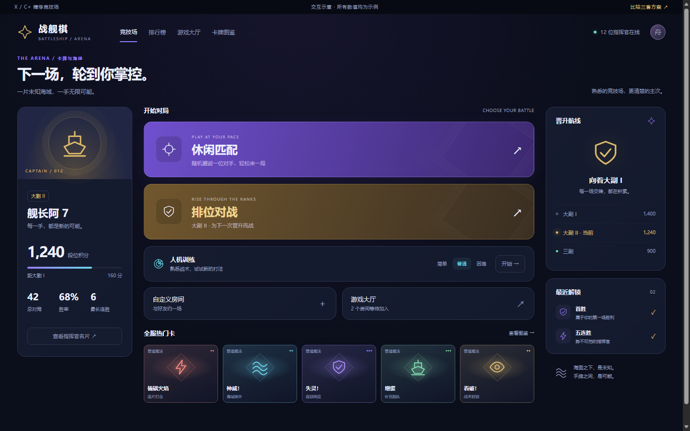

02 / Y更有海战氛围
舰桥指挥台
将竞技场变成一座深海舰桥。青铜与深青替代大面积紫色，细线、坐标和仪表感强化战术氛围。
首页：竖向导航，舰队档案与出战入口对局：清晰网格，紧凑战术侧栏适合：希望整体气质更贴近海战指挥
保留你喜欢的深色竞技感、魔法卡与金色段位。
三种信息布局，同一组示例数据；从首页一路体验到对局。
建议从 X 开始。
它最贴近 C，适合逐步替换；也可以组合 X 的首页、Y 的色彩和 Z 的对局信息简条。
可以实际点什么？
切换首页／对局、选择训练难度、查看卡牌详情、在对手棋盘选格并确认攻击。手机可上下滚动浏览，手牌横向滑动。